PRD & LAMPIRAN TEKNIS
Prototipe 4 unit alat — 3 node sensor nirkabel dan 1 controller utama
| Versi dokumen | 1.0 — gabungan PRD v0.1 dan lampiran teknis |
| Tanggal | 19 Oktober 2026 |
| Penyusun | AViSha Inovasi Indonesia |
| Status | Draft — spesifikasi teknis menunggu persetujuan pemesan |
| Referensi | Invoice #113 tanggal 2 Oktober 2026; percakapan 14–19 Oktober 2026 |
Dokumen ini bukan alat diagnosis medis dan tidak menggantikan tenaga kesehatan.
Proyek ini membangun prototipe sistem pemantauan parameter fisiologis yang terdiri dari empat unit alat fisik: tiga node sensor nirkabel dan satu controller utama. Setiap node membaca satu parameter, mengirimkannya lewat ESP-NOW, dan controller memvalidasi, mengklasifikasi, menampilkan status di OLED, serta memutar panduan suara melalui DFPlayer.
Tiga hal membedakan dokumen ini dari sekadar daftar komponen. Pertama, sistem dirancang dengan prinsip kegagalan aman: data yang hilang atau tidak valid tidak pernah ditampilkan sebagai kondisi normal. Kedua, ambang keputusan diberi label sebagai usulan yang disertai rujukan, bukan angka final — keputusan klinis tetap milik pemesan. Ketiga, dokumen ini memisahkan dengan tegas antara rancangan dan hasil pengujian; tidak ada angka kinerja yang diklaim sebelum diukur.
| Aspek | Ringkasan |
|---|---|
| Jumlah unit | 4 — Node 1 (ECG), Node 2 (SpO2/HR), Node 3 (suhu), Controller |
| Komunikasi | ESP-NOW 2,4 GHz, 1 paket per detik per node, timeout 3 detik |
| Keluaran | OLED 128×64, DFPlayer + speaker (13 track audio), LED indikator |
| Status sistem | TERPUTUS > TIDAK VALID > GAWAT > PERHATIAN > NORMAL |
| Firmware | 2 build — satu firmware node (di-flash 3×) dan satu firmware controller |
| Yang belum final | Sumber daya 4 unit, ambang keputusan, isi panduan first aid |
Invoice menyebut tiga unit ESP32 Sensor Node dan satu ESP32 Controller Utama. Karena itu sistem dihitung sebagai empat alat, masing-masing dengan MCU, catu daya, dan casing sendiri.
| Unit | Peran | Sensor / aktuator | Catu daya |
|---|---|---|---|
| Alat 1 — Node 1 | Akuisisi ECG | AD8232 + 3 elektroda | Charging/power node 1 |
| Alat 2 — Node 2 | Akuisisi SpO2/HR | MAX30102 | Charging/power node 2 |
| Alat 3 — Node 3 | Akuisisi suhu | DS18B20 | Charging/power node 3 |
| Alat 4 — Controller | Penerima, tampilan, audio, log | OLED, DFPlayer, microSD, speaker, tombol, LED | Power Box Utama |
Konsekuensi yang perlu dihitung sejak awal: empat catu daya terpisah harus siap sebelum uji integrasi; controller harus mengenali tiga MAC node; dan ada empat box (3 box node + 1 box utama), meski ketiga box node dapat memakai satu desain yang sama.
Pembagian sensor ke node, protokol wireless, format payload, ambang batas, logika klasifikasi, detail panduan first aid, desain mekanik final, durasi baterai, dan kriteria pengujian numerik.
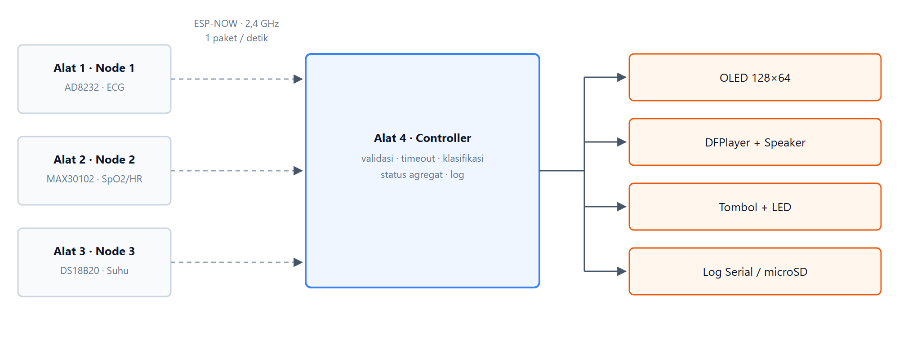
Gambar 1 — Tiga node sensor mengirim ke satu controller; controller menggerakkan empat keluaran.
Setiap node hanya membawa satu sensor agar kegagalan satu sensor tidak menjatuhkan node lain. Controller menjadi satu-satunya titik yang mengetahui status keseluruhan, sehingga logika keputusan tidak tersebar dan mudah diaudit saat penulisan paper.
Urutan dari yang paling tinggi: TERPUTUS > TIDAK VALID > GAWAT > PERHATIAN > NORMAL. Artinya, kehilangan data tidak boleh menutupi kondisi bahaya, dan kondisi bahaya tidak boleh menyamarkan bahwa ada node yang mati. Bila Node 1 terputus sementara Node 2 menunjukkan kondisi gawat, layar menampilkan keduanya, tetapi audio yang diputar adalah audio gawat.
| ID | Kebutuhan | Kriteria penerimaan awal |
|---|---|---|
| FR-01 | Node membaca sensor terpasang | Pembacaan tersedia di firmware dan dapat diperiksa saat pengujian |
| FR-02 | Node mengirim data nirkabel | Controller menerima paket dari node terdaftar |
| FR-03 | Controller mengenali sumber data | Setiap paket membawa identitas node |
| FR-04 | Controller memvalidasi data | Data hilang atau di luar rentang ditandai dan tidak dipakai untuk keputusan |
| FR-05 | Controller menampilkan data | Nilai, identitas node, dan status tampil di OLED |
| FR-06 | Controller menjalankan aturan keputusan | Hanya aturan yang disetujui dan terdokumentasi yang berjalan |
| FR-07 | Sistem memutar audio | Audio terpetakan ke kondisi terkonfirmasi diputar lewat DFPlayer |
| FR-08 | Sistem menandai gangguan | Kegagalan sensor atau komunikasi terlihat jelas |
| FR-09 | Sistem menyediakan data pengujian | Cara pencatatan ditentukan sebelum pengujian |
| FR-10 | Sistem menampilkan panduan first aid | Konten ditinjau dan disetujui sebelum dipakai |
Ambang fisiologis belum ditentukan oleh sumber proyek. Angka di bawah adalah usulan yang disertai rujukan umum untuk dewasa saat istirahat — bukan protokol klinis, dan tidak berlaku untuk anak, bayi, atau ibu hamil. Semua baris harus disetujui pemesan sebelum implementasi.
| Sensor | Syarat data dianggap valid | Kalau gagal |
|---|---|---|
| AD8232 | LO+ dan LO− tidak HIGH selama 1 detik | q=0, error E1 — elektroda lepas |
| MAX30102 | Jari terdeteksi, amplitudo PPG cukup, HR 30–220 bpm stabil 5 detik | q=0, error E2 — sinyal PPG buruk |
| DS18B20 | CRC cocok, nilai 30,0–43,0 °C | q=0, error E3 — suhu tidak terbaca |
| Semua | Nilai bukan NaN dan tidak di luar rentang teknis | q=0, error E9 |
| Param | Satuan | Kondisi IF | Status | Tampilan | Audio | Rujukan |
|---|---|---|---|---|---|---|
| HR | bpm | < 50 | BRADIKARDIA BERAT | HR 45 !!! | A-03 | AHA — bradikardia < 60 |
| HR | bpm | 50 – 59 | BRADIKARDIA | HR 55 ! | A-02 | AHA — bradikardia < 60 |
| HR | bpm | 60 – 100 | NORMAL | HR 78 | — | AHA — 60–100 bpm |
| HR | bpm | 101 – 120 | TAKIKARDIA | HR 112 ! | A-02 | AHA — takikardia > 100 |
| HR | bpm | > 120 | TAKIKARDIA BERAT | HR 134 !!! | A-03 | AHA — takikardia > 100 |
| SpO2 | % | ≥ 95 | NORMAL | SpO2 97% | — | WHO — ≥ 95% normal |
| SpO2 | % | 91 – 94 | HIPOKSIA RINGAN | SpO2 93% ! | A-04 | WHO — di bawah normal |
| SpO2 | % | 86 – 90 | HIPOKSIA SEDANG | SpO2 88% !!! | A-05 | WHO — ≤ 90% hipoksemia |
| SpO2 | % | ≤ 85 | HIPOKSIA BERAT | SpO2 83% !!! | A-05 | WHO — hipoksemia berat |
| Suhu | °C | < 35,0 | HIPOTERMIA BERAT | T 34.2 !!! | A-07 | Hipotermia berat < 35 °C |
| Suhu | °C | 35,0 – 35,9 | HIPOTERMIA | T 35.6 ! | A-06 | Hipotermia < 36 °C (aksila) |
| Suhu | °C | 36,0 – 37,4 | NORMAL | T 36.6 | — | Aksila normal 36,0–37,4 |
| Suhu | °C | 37,5 – 37,9 | DEMAM RINGAN | T 37.7 ! | A-08 | Demam ≥ 37,5 °C (aksila) |
| Suhu | °C | 38,0 – 39,4 | DEMAM | T 38.6 ! | A-08 | Demam ≥ 38,0 °C |
| Suhu | °C | ≥ 39,5 | DEMAM TINGGI | T 39.8 !!! | A-09 | Demam tinggi ≥ 39,5 °C |
| ECG | — | LO+/LO− HIGH > 1 s | ELEKTRODA LEPAS | ECG: LEPAS | A-10 | Datasheet AD8232 |
| ECG | bpm | selisih HR > 15 selama 5 s | HR TIDAK KONSISTEN | HR: CEK SENSOR | A-11 | Konsistensi dua metode |
| ECG | — | selain di atas | ECG TERBACA | ECG: OK | — | Tanpa interpretasi irama |
| Komunikasi | — | tidak ada paket > 3 s | NODE TERPUTUS | N1: TERPUTUS | A-12 | Batas desain sistem |
| Sistem | — | hanya 1 dari 3 node aktif > 10 s | SISTEM TIDAK LENGKAP | 1/3 NODE | A-13 | Batas desain sistem |
Soal ECG. Sistem ini tidak menginterpretasi irama jantung. Satu lead tidak cukup untuk itu, dan klaim aritmia tidak boleh muncul di paper. Yang dilaporkan hanya status elektroda, HR turunan, dan konsistensi HR terhadap PPG.
Ambang angka saja tidak cukup — nilai yang berayun di batas akan membuat status berkedip dan audio berbunyi berulang. Karena itu: perubahan status hanya berlaku bila kondisi bertahan minimal tiga detik berturut-turut; keluar dari status gawat memerlukan margin dua satuan; dan nilai yang hilang tidak dihitung sebagai normal, melainkan dibekukan dan diberi tanda garis ganda.
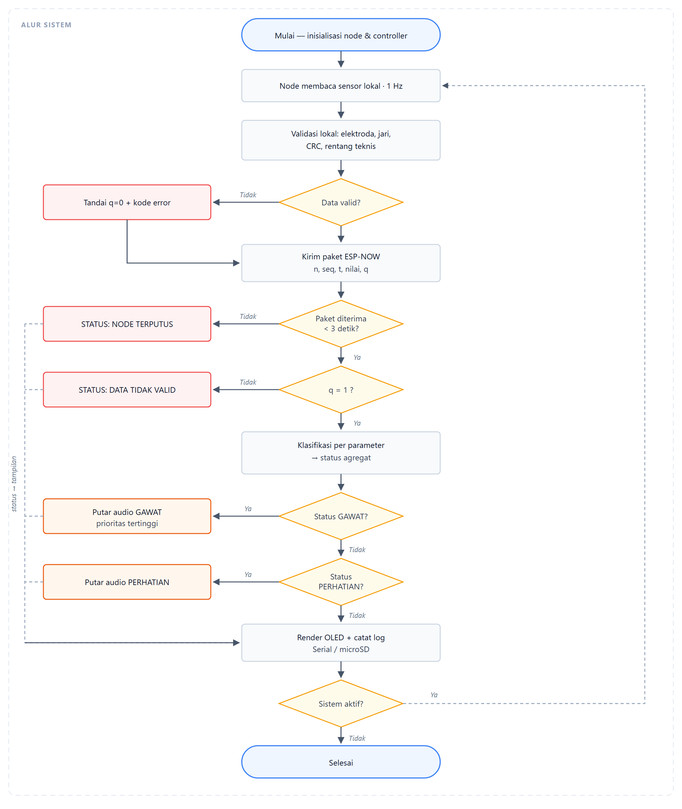
Gambar 2 — Alur node dan controller, termasuk jalur elektroda lepas, timeout, dan jalur status.
Dua hal yang mudah terlewat saat membaca diagram ini. Pertama, cabang "tidak valid" tetap mengirim paket — node tidak diam, ia melaporkan bahwa dirinya tidak valid, sehingga controller bisa membedakan antara "sensor rusak" dan "node mati". Kedua, semua cabang status bertemu kembali sebelum tahap tampilan, sehingga layar selalu menampilkan keadaan terbaru, bukan keadaan terakhir yang kebetulan normal.
Berkas disimpan di folder mp3/ pada microSD dengan nama empat digit, MP3 mono 128 kbps
44,1 kHz. DFPlayer membaca urutan nama berkas, bukan isi folder.
| Kode | Berkas | Isi suara | Prioritas |
|---|---|---|---|
| A-01 | 0001.mp3 | Sistem siap. Semua sensor terhubung. | 1 |
| A-02 | 0002.mp3 | Perhatian. Detak jantung tidak normal. | 2 |
| A-03 | 0003.mp3 | Peringatan. Detak jantung sangat tidak normal. Segera cari bantuan. | 4 |
| A-04 | 0004.mp3 | Perhatian. Kadar oksigen sedikit rendah. | 2 |
| A-05 | 0005.mp3 | Peringatan. Kadar oksigen rendah. Segera cari bantuan. | 4 |
| A-06 | 0006.mp3 | Perhatian. Suhu tubuh rendah. | 2 |
| A-07 | 0007.mp3 | Peringatan. Suhu tubuh sangat rendah. Segera cari bantuan. | 4 |
| A-08 | 0008.mp3 | Perhatian. Suhu tubuh meningkat. | 2 |
| A-09 | 0009.mp3 | Peringatan. Suhu tubuh tinggi. Segera cari bantuan. | 4 |
| A-10 | 0010.mp3 | Elektroda terlepas. Periksa pemasangan elektroda. | 3 |
| A-11 | 0011.mp3 | Pembacaan detak jantung tidak konsisten. Periksa sensor. | 3 |
| A-12 | 0012.mp3 | Node tidak terhubung. Periksa daya node. | 3 |
| A-13 | 0013.mp3 | Sistem tidak lengkap. Sebagian node tidak aktif. | 3 |
Aturan pemutaran: hanya satu track pada satu waktu; audio gawat tidak boleh dipotong oleh prioritas lebih rendah; kondisi yang sama tidak diulang sebelum 30 detik; maksimal tiga kali pengulangan per kondisi, setelah itu senyap sampai kondisi berubah.
Tabel di bawah adalah acuan pemasangan. Semua pin pada ESP32 diambil dari sisi yang sama agar kabel tidak menyilang di dalam box.
| Unit | Pin ESP32 | Pin modul | Fungsi |
|---|---|---|---|
| Node 1 | 3V3 | 3.3V | Catu daya modul |
| GND | GND | Ground bersama | |
| GPIO 34 | OUTPUT | Sinyal ECG — ADC1, input only | |
| GPIO 35 | LO+ | Deteksi elektroda lepas | |
| GPIO 32 | LO− | Deteksi elektroda lepas | |
| Node 2 | 3V3 | VIN | Catu daya modul |
| GND | GND | Ground bersama | |
| GPIO 21 | SDA | I2C data | |
| GPIO 22 | SCL | I2C clock | |
| GPIO 27 | INT | Interrupt — opsional | |
| Node 3 | 3V3 | VDD | Catu daya |
| GPIO 4 | DQ | 1-Wire + pull-up 4,7 kΩ ke 3V3 | |
| GND | GND | Ground bersama | |
| Controller | 3V3 | OLED VCC | Catu daya layar |
| GPIO 21 | OLED SDA | I2C data | |
| GPIO 22 | OLED SCL | I2C clock | |
| 5V | DFPlayer VCC | 5V, bukan 3,3V — amplifier butuh 5V |
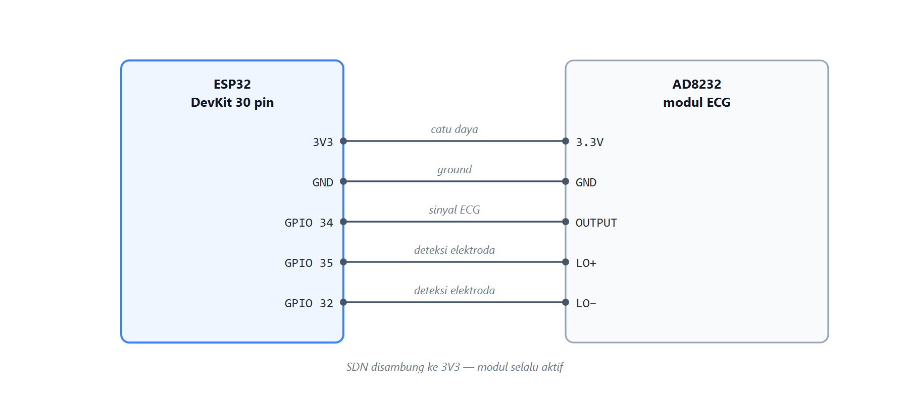
Gambar 3 — Node 1. Elektroda RA, LA, RL lewat kabel 3,5 mm ke modul; pin SDN disambung ke 3V3.
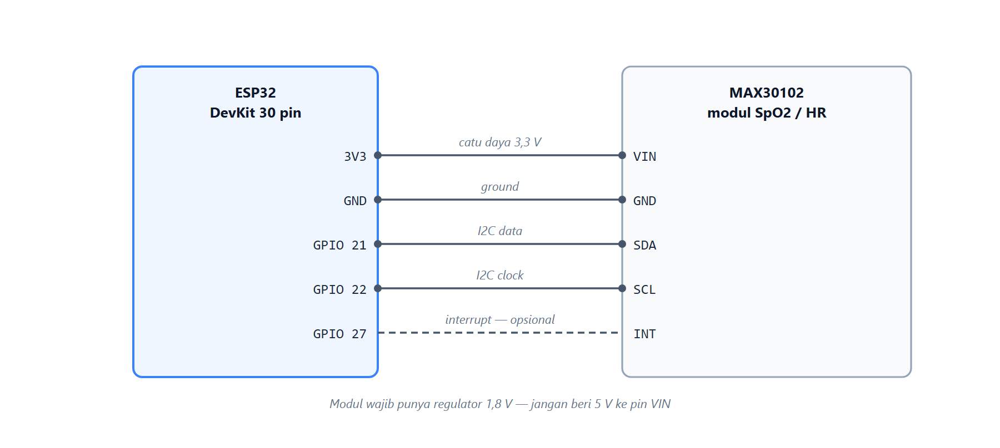
Gambar 4 — Node 2. Sensor ditekan ke jari, bukan sekadar disentuh.
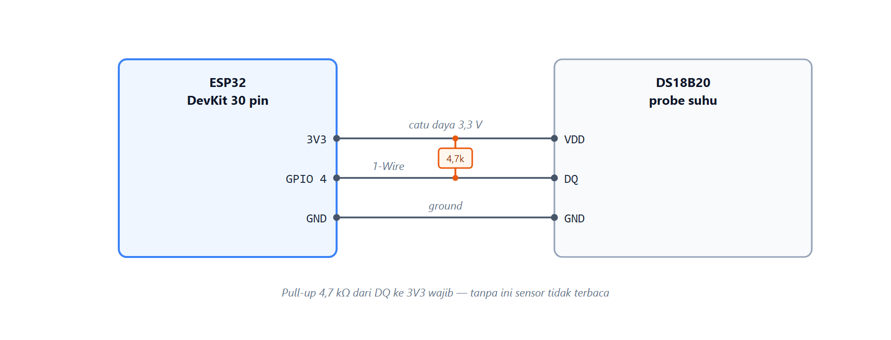
Gambar 5 — Node 3. Pull-up 4,7 kΩ dari DQ ke 3V3 wajib; tanpa itu sensor tidak terbaca.
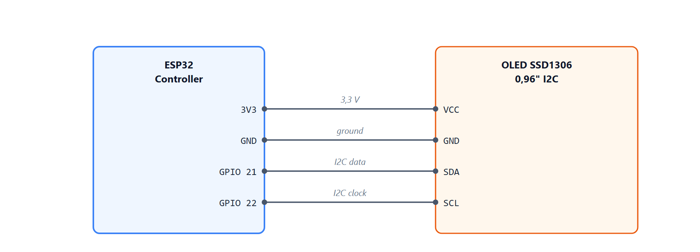
Gambar 6 — OLED SSD1306, alamat I2C umumnya 0x3C.
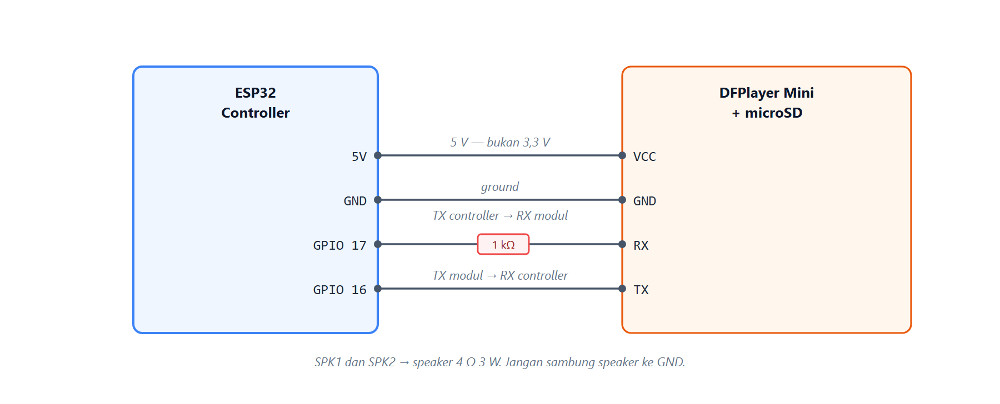
Gambar 7 — DFPlayer. SPK1 dan SPK2 ke speaker 4 Ω 3 W; jangan menyambung speaker ke GND.
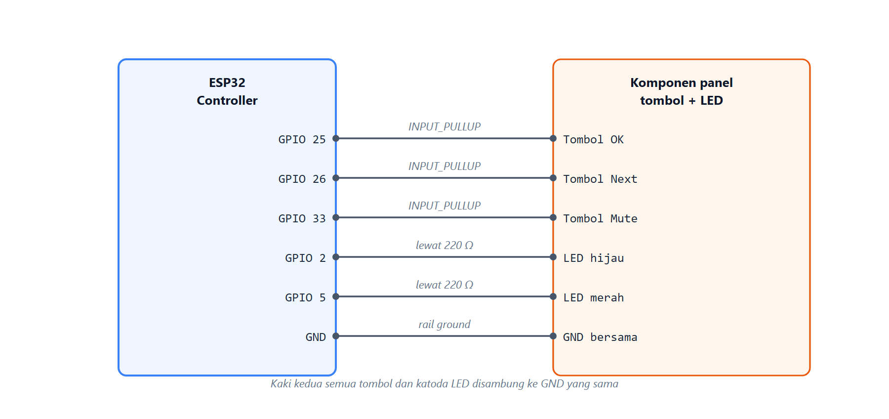
Gambar 8 — Panel depan. Tombol memakai pull-up internal, LED memakai resistor 220 Ω.
Bagian ini belum diputuskan. Invoice menyebut unit charging/power tanpa baterai. Tanpa keputusan sumber daya, keempat alat belum bisa menyala bersamaan dan uji integrasi belum bisa dimulai.
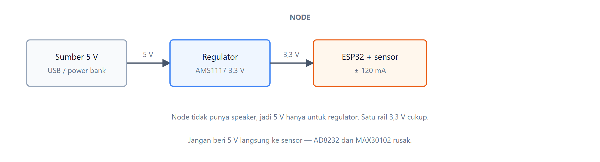
Gambar 9 — Node: satu rail 3,3 V untuk semua beban.
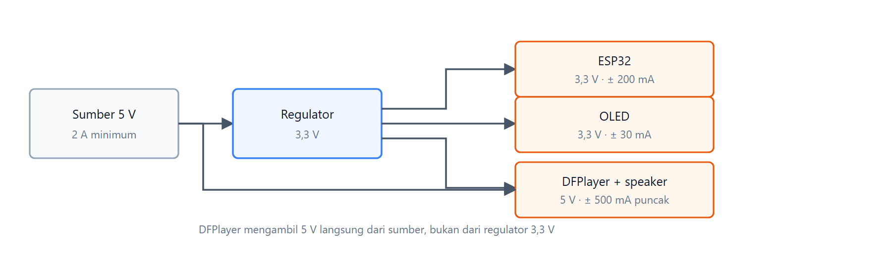
Gambar 10 — Controller: DFPlayer mengambil 5 V langsung dari sumber, bukan dari regulator 3,3 V.
| Opsi | Kelebihan | Kekurangan | Cocok untuk |
|---|---|---|---|
| A. Power bank USB 5 V per unit | Cepat, murah, tidak perlu solder | Kabel USB keluar dari box; belum sepenuhnya nirkabel | Prototipe dan uji cepat |
| B. 18650 + TP4056 + boost 5 V | Benar-benar portabel, bisa diisi ulang | Butuh ruang, perlu proteksi, perakitan lebih lama | Alat final |
| C. Adaptor 5 V DC | Paling stabil untuk pengujian lama | Tidak portabel | Uji laboratorium |
Rekomendasi: opsi A untuk prototipe dan uji integrasi, opsi B untuk versi yang dipamerkan. Casing menyediakan lubang USB sehingga keduanya bisa dipakai tanpa mengubah desain.
Dimensi di bawah adalah usulan, bukan hasil ukur. Ukur modul yang benar-benar dibeli sebelum mencetak — modul AD8232 dan MAX30102 yang beredar punya ukuran dan urutan pin berbeda antar penjual.
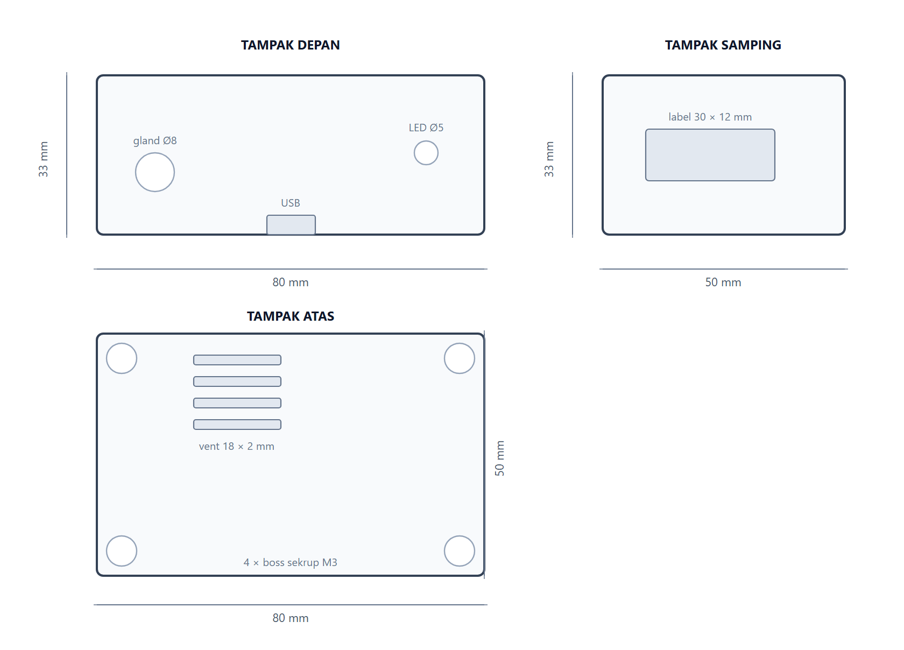
Gambar 11 — Casing node, tiga tampak. Tebal dinding 2,5 mm.
| Bukaan | Dimensi | Posisi | Keterangan |
|---|---|---|---|
| USB | 10 × 4 mm | Tengah bawah | Akses flash firmware |
| LED status | Ø 5 mm | Kanan atas | Satu LED per node |
| Gland kabel | Ø 8 mm | Kiri tengah | Node 1 kabel elektroda; Node 3 kabel probe |
| Vent | 18 × 2 mm, 4 buah | Kiri atas | Pelepasan panas regulator |
| Boss sekrup | Ø 6 mm, 4 buah | Sudut, inset 5 mm | Sekrup M3 panjang 10 mm |
| Node | Bukaan yang berubah | Alasan |
|---|---|---|
| Node 1 | Gland Ø8 di kiri | Kabel tiga elektroda keluar dari box |
| Node 2 | Gland diganti jendela jari Ø16 di tutup atas; vent dipindah ke samping | Jari harus menekan sensor langsung, bukan menyentuh casing |
| Node 3 | Gland Ø8 di kiri, vent dihapus | Probe DS18B20 berbentuk kabel |
Node 2 butuh perhatian khusus. MAX30102 harus kontak kulit langsung tanpa cahaya luar. Kalau jendela jari terlalu lebar atau sensor tertanam terlalu dalam, pembacaan akan gagal terus dan sistem menandainya q=0 — benar secara aturan, tetapi alat terlihat rusak.
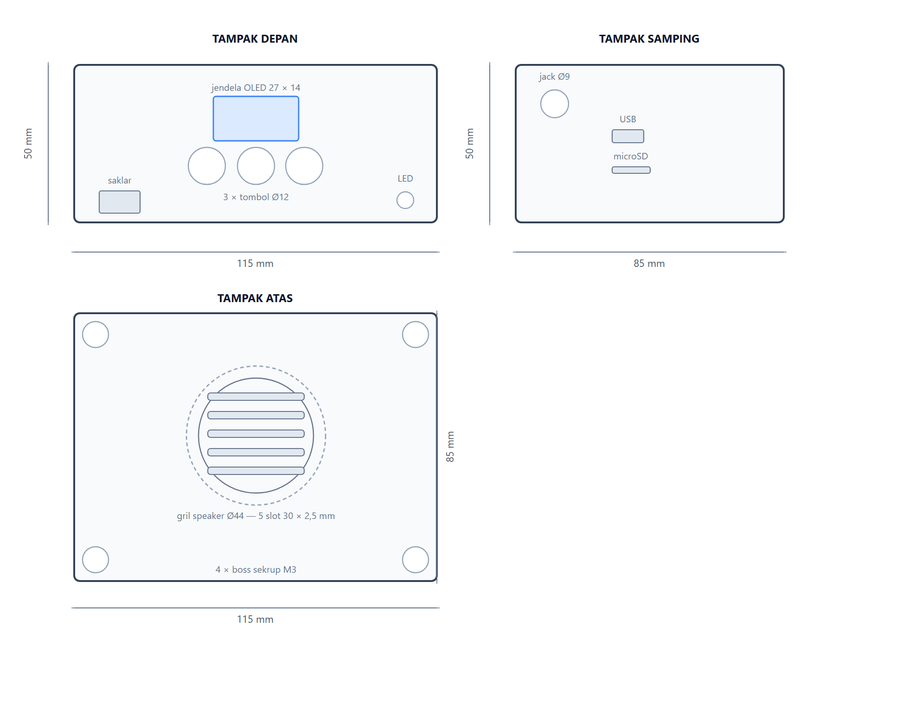
Gambar 12 — Casing utama, tiga tampak. Tebal dinding 2,5 mm.
| Bukaan | Dimensi | Posisi | Keterangan |
|---|---|---|---|
| Jendela OLED | 27 × 14 mm | Depan, tengah atas | Area aktif OLED 21,7 × 11,2 mm |
| Tombol | Ø 12 mm, 3 buah | Depan, bawah | Jarak antar pusat 16 mm |
| LED | Ø 5 mm, 2 buah | Depan, kanan bawah | Hijau normal, merah alarm |
| Saklar daya | 13 × 7 mm | Depan, kiri bawah | Toggle SPDT |
| Gril speaker | Ø 44 mm, 5 slot 30 × 2,5 mm | Atas, tengah | Speaker 40 mm di bawahnya |
| Jack DC | Ø 9 mm | Samping, kiri atas | Input 5 V |
| USB | 10 × 4 mm | Samping, tengah | Flash firmware |
| microSD | 12 × 2 mm | Samping, bawah USB | Slot DFPlayer, harus bisa dicapai tanpa bongkar |
Slot microSD jangan ditutup. Kartu berisi 13 berkas audio dan akan sering diganti bila isi audio berubah.
| ID | Pengujian | Bukti yang dikumpulkan |
|---|---|---|
| T-01 | Pembacaan setiap sensor | Log pembacaan dan kondisi pengujian |
| T-02 | Pengiriman dari setiap node | ID node, paket terkirim dan diterima, waktu |
| T-03 | Node terputus | Waktu hingga controller menandai timeout |
| T-04 | Data tidak valid | Bukti data ditandai dan tidak diklasifikasikan |
| T-05 | Tampilan OLED | Foto atau video dan hasil verifikasi tampilan |
| T-06 | Pemutaran audio | Kondisi pemicu dan audio yang keluar |
| T-07 | Integrasi tiga node | Log penerimaan data dari seluruh node |
| T-08 | Uji berulang | Jumlah percobaan, kegagalan, catatan |
| T-09 | Casing dan perakitan | Foto prototipe dan daftar masalah mekanik |
| T-10 | Akurasi HR | 30 pasangan data terhadap oximeter komersial |
| T-11 | Akurasi SpO2 | 30 pasangan data terhadap pulse oximeter |
| T-12 | Akurasi suhu | 20 pasangan data terhadap termometer digital |
| T-13 | Deteksi elektroda lepas | Lepas-pasang 10 kali, jumlah terdeteksi |
| T-14 | Latensi end-to-end | Rata-rata dan maksimum dalam milidetik |
| T-15 | Jarak jangkau ESP-NOW | Uji per 5 meter sampai gagal |
Nilai hasil, tingkat keberhasilan, latensi, atau akurasi baru boleh diisi setelah pengujian aktual. Catat juga jumlah subjek, kondisi ruangan, dan waktu pengujian — tanpa itu hasilnya tidak bisa diulang.
| Risiko | Mitigasi |
|---|---|
| Pembagian sensor per node belum jelas | Buat tabel alokasi dan minta persetujuan sebelum wiring |
| Ambang keputusan belum disepakati | Jangan mengarang ambang; gunakan rujukan yang disetujui dan dokumentasikan |
| Wireless putus atau paket hilang | Timeout, ID node, nomor urut, timestamp, dan status gangguan |
| Sensor menghasilkan pembacaan buruk | Validasi kualitas data sebelum klasifikasi |
| Paper membutuhkan hasil sebelum alat selesai | Tulis metode dan rancangan lebih dulu; isi hasil hanya dari eksperimen nyata |
| Catu daya belum lengkap | Catat bahwa komponen power tidak termasuk baterai dan konfirmasi kebutuhan daya |
| Risiko listrik pada elektroda | Modul AD8232 tidak terisolasi galvanis; gunakan adaptor berkualitas dan jangan menyentuh elektroda saat perangkat terhubung ke pengisi daya yang meragukan |
Struct biner untuk ESP-NOW, sekitar 40 byte:
| Field | Tipe | Keterangan |
|---|---|---|
| node_id | uint8 | 1 sampai 3 |
| seq | uint16 | Naik terus, untuk mendeteksi paket hilang |
| t_ms | uint32 | millis() node saat membaca |
| q | uint8 | 1 valid, 0 tidak valid |
| err | uint8 | 0 ok, 1 elektroda, 2 PPG, 3 suhu, 9 umum |
| hr | int16 | bpm, −1 bila tidak ada |
| spo2 | uint8 | persen, 0 bila tidak ada |
| temp_x10 | int16 | °C dikali 10, −1 bila tidak ada |
| vbat_mv | uint16 | Tegangan suplai dalam milivolt |
Versi JSON hanya dipakai untuk log dan paper, bukan untuk lalu lintas ESP-NOW.
Batasan yang wajib dipatuhi: GPIO 34–39 hanya bisa jadi input; ADC yang bisa dipakai saat WiFi/ESP-NOW aktif hanya ADC1 (GPIO 32–39); hindari GPIO 6–11 karena dipakai flash internal; GPIO 0, 2, 12, dan 15 adalah strapping pin sehingga tidak cocok untuk tombol yang ditekan saat boot.
| Perangkat | Pin ESP32 | Keterangan |
|---|---|---|
| OLED SDA / SCL | GPIO 21 / 22 | I2C, alamat 0x3C |
| DFPlayer RX | GPIO 17 | Lewat resistor 1 kΩ seri |
| DFPlayer TX | GPIO 16 | RX2 controller |
| Tombol OK / Next / Mute | GPIO 25 / 26 / 33 | INPUT_PULLUP |
| LED status / alarm | GPIO 2 / 5 | Lewat resistor 220 Ω |
Nomor halaman dan edisi dokumen rujukan perlu dicocokkan ulang saat penulisan paper. Sitasi di atas menyebut dokumen, bukan kutipan verbatim.